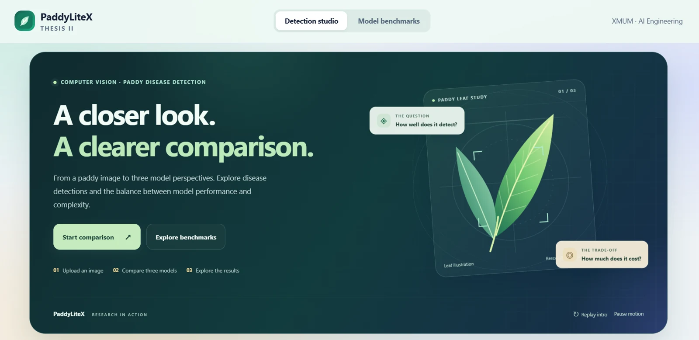

Linear Algebra
Use vectors, matrices, and transformations to understand neural networks, image features, and embeddings.
AI ENGINEERING · XMUM
I build lightweight vision models and evidence-grounded AI applications, with careful experiments behind every result. Fourth-year AI Engineering student, based in Malaysia.
I buildlightweight detectors, visual inspection tools, RAG applications, and reinforcement learning agents.

A compact backbone for paddy disease detection.
Selected courses I have taken at Xiamen University Malaysia, and how I apply their foundations in model training, evaluation, and AI applications.
Use vectors, matrices, and transformations to understand neural networks, image features, and embeddings.
Understand intelligent systems and problem-solving methods, then connect AI concepts to practical applications.
Work with text representations and retrieval to support explanations grounded in reference material.
Design and train neural networks; compare architectures, optimization choices, and model complexity.
Compare baselines and model variants through controlled experiments and careful evaluation.
Build image-processing, classification, and object-detection pipelines, then evaluate their predictions.
Train agents to make sequential decisions using PPO, reward shaping, curriculum learning, and self-play.
Clean and explore datasets, visualize patterns, and interpret results to support reliable model evaluation.
Organize code, structure application components, and turn model pipelines into maintainable interfaces and services.
Computer vision, visual anomaly inspection, RAG and reinforcement learning. Explore the problem, my contribution, and the results.
No projects match this combination.
☆ Save projects to a shortlist on this device. Share your selection in an email.
I'm Wilbert Andrew Yonathan, an Indonesian fourth-year AI Engineering student at XMUM.
I'm especially interested in a practical question: how can we make a model more useful without making it bigger? My work explores efficient computer vision, visual anomaly inspection, RAG, and the step from a model experiment to a usable application.
From paddy leaves and underwater organisms to industrial inspection, I enjoy connecting the research, the code, and the evidence someone can review on screen.
Programming, machine learning, generative AI, web development and the platforms I use to bring it all together.
Languages I use to build, query and solve problems.
Model development, data analysis and computer vision.
Language models, retrieval and graph-based orchestration.
Interfaces and services that make experiments usable.
Version control, storage, deployment and integrations.
Academic progress and the people-facing experiences that shape how I work.
Trained and evaluated PPO agents for the AIT306 team project. Watch the competition.
Managed media workflows and edited materials for community outreach.
Managed logistics and coordinated external collaborators for a national-level AI event. Recognized for serving as Head of General Affairs for the dPickleball event.
Supported the Bojio? Onz Lah!!! booth event on 25 June 2025, recognized with a Certificate of Appreciation.
Supported administrative workflows, internal communication, and club activities. General Affairs in 2023–2024; Assistant of General Affairs in 2024–2025.
Recognized for the September 2024, April 2025, and September 2025 academic sessions. Current CGPA: 3.77 / 4.00.
Looking for an AI Engineering or Computer Vision internship
starting 29 March 2027, for 3–5 months.
Malaysia preferred. Also open to relevant part-time opportunities.
Your guide to Wilbert’s work